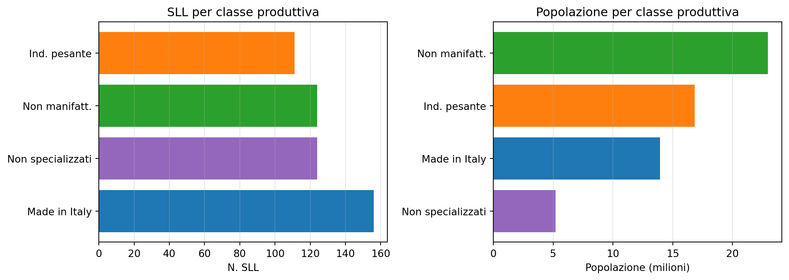
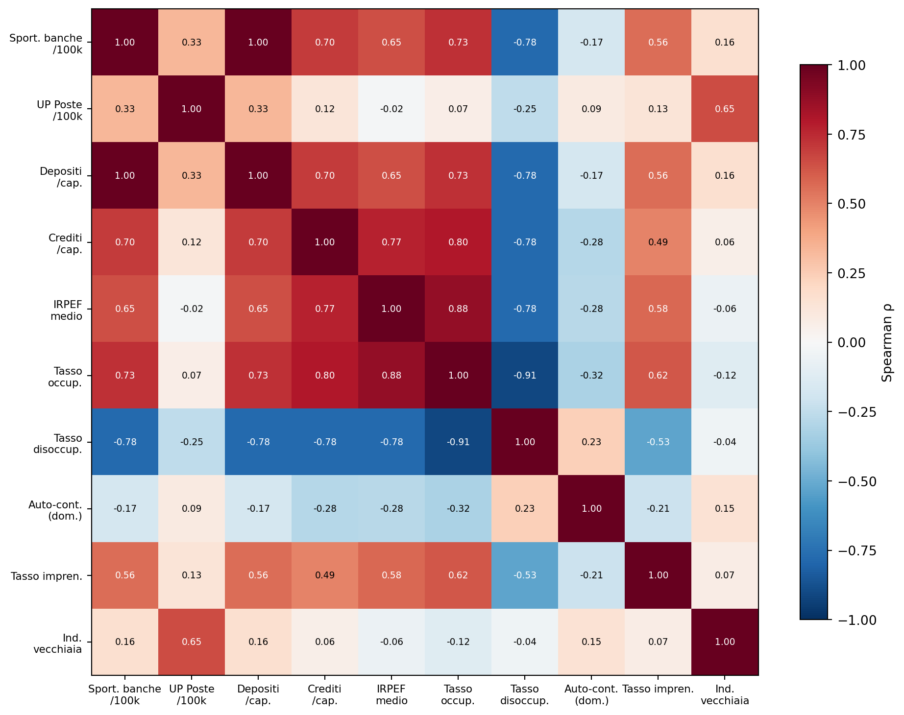
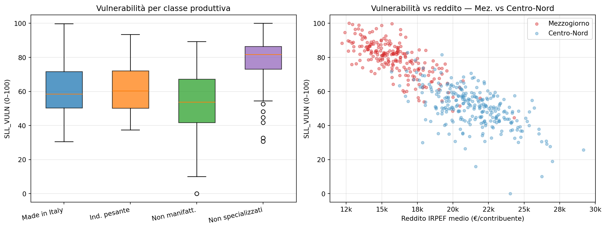
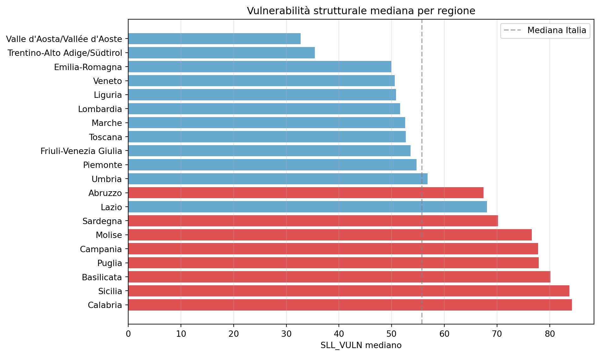
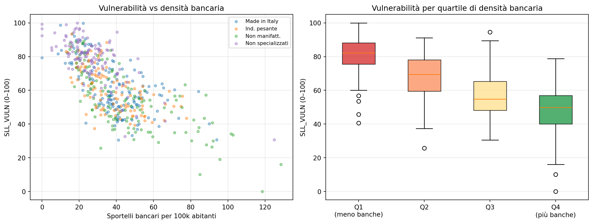

Struttura produttiva e vulnerabilità creditizia nei Sistemi Locali del Lavoro italiani
Sviluppo di un indice territoriale SLL_VULN su 515 sistemi locali
Paolo Volterra ![]()
I Sistemi Locali del Lavoro (SLL) — unità territoriali funzionali costruite sui flussi di pendolarismo — offrono una granularità territoriale superiore a province e regioni per analizzare la struttura produttiva e le condizioni creditizie del territorio italiano. Questo documento combina il framework analitico sviluppato in febbraio 2026 con il dataset empirico sll_master_v3 (515 SLL × 72 colonne, giugno 2026) per costruire un indice di vulnerabilità strutturale SLL_VULN, validarne la coerenza geografica e settoriale, e discutere le implicazioni per il risk management bancario e la policy pubblica. I risultati mostrano che la vulnerabilità strutturale è fortemente concentrata nel Mezzogiorno (classe D), correlata con bassa occupazione, basso reddito e scarsa presenza bancaria, e attenuata dalla specializzazione produttiva distrettuale.
SLL, sistemi locali del lavoro, rischio creditizio, vulnerabilità strutturale, Mezzogiorno, IFRS 9, market failure, copertura bancaria
Versione citabile su Zenodo, con il PDF: doi.org/10.5281/zenodo.20631785.
1 Perché gli SLL
I Sistemi Locali del Lavoro sono la risposta italiana alla domanda: qual è l’unità territoriale che cattura meglio la struttura produttiva reale? Province e regioni sono unità amministrative; i SLL sono costruiti sui flussi effettivi di pendolarismo casa-lavoro rilevati al censimento. Un SLL è autocontenuto per definizione: almeno il 75% degli addetti che vi lavorano risiede nell’area, e almeno il 75% dei residenti che lavorano lo fanno nell’area stessa.
Questa costruzione li rende coerenti con la struttura del rischio creditizio locale in un modo che le province non catturano:
- Il rischio di un’impresa manifatturiera dipende dalla sua filiera locale, non dal confine provinciale
- La mobilità del lavoro — e quindi la resilienza occupazionale — segue i confini SLL, non quelli amministrativi
- L’aggregazione bancaria a livello SLL non produce gli artefatti che si producono aggregando sportelli per provincia (dove una città capoluogo domina statisticamente l’intero territorio)
L’ISTAT ha classificato i 515 SLL 2021 in quattro macro-classi e 17 gruppi sulla base della specializzazione produttiva prevalente. Questa classificazione è il punto di partenza per qualsiasi analisi del rischio territoriale che voglia distinguere le diverse strutture produttive.

Figura 1: Distribuzione dei 515 SLL e della popolazione residente per classe produttiva (tassonomia ISTAT 2021).
2 Il dataset empirico: cosa è ora disponibile
Il documento originale del febbraio 2026 identificava come lacuna centrale l’assenza di dati finanziari e creditizi mappati a livello SLL. Il dataset sll_master_v3 costruito nel giugno 2026 colma in gran parte questa lacuna.
Tabella 1 — Dimensioni e fonti del dataset sll_master_v3.
| Dimensione | Indicatori | Fonte | Copertura |
|---|---|---|---|
| Copertura finanziaria | Sportelli bancari, UP Poste, ATM | Bankit TDB + Poste Italiane | 515/515 SLL |
| Intermediazione | Depositi totali, crediti MLT | Bankit TDB10195/TFR10241 | 515/515 SLL |
| Reddito | IRPEF medio per contribuente | MEF 2022 | 515/515 SLL |
| Mercato del lavoro | Tasso occupazione/disoccupazione, auto-contenimento | ISTAT 2021–2023 | 515/515 SLL |
| Struttura produttiva | 17 gruppi ISTAT, flag distretto 2011 | ISTAT | 515/515 SLL |
| Imprenditorialità | Tasso imprenditorialità, addetti artigiani% | ISTAT | 515/515 SLL |
| Innovazione | Copertura FTTH% | ISTAT | 515/515 SLL |
| Struttura demografica | Indice vecchiaia, tasso migratorio, età media | ISTAT | 515/515 SLL |
Il gap che rimane è la correlazione con dati di default dalla Centrale Rischi (NPL ratio, PD per SLL): questi non sono disponibili alla granularità SLL e richiederebbero accesso ai micro-dati di vigilanza.
3 Matrice delle correlazioni strutturali
Prima di costruire l’indice sintetico, è utile visualizzare le correlazioni tra le dimensioni chiave.

Figura 2: Matrice di correlazione Spearman tra le dimensioni strutturali dei 515 SLL.
La matrice rivela tre pattern rilevanti per il risk management:
- Cluster “economia reale”: sportelli bancari, depositi, crediti e reddito IRPEF sono fortemente correlati tra loro (ρ > 0.6). Chi ha più banche ha più depositi, più crediti e redditi più alti. È un blocco strutturalmente coerente.
- Disoccupazione anti-correlata: il tasso di disoccupazione è negativamente correlato con tutti gli indicatori del cluster “economia reale” (ρ ≈ −0.5/−0.6). Mercati del lavoro deboli e sistemi finanziari deboli si sovrappongono geograficamente.
- Poste Italiane indipendenti:
up_100kha correlazione prossima a zero con reddito, depositi e sportelli bancari. Conferma empiricamente la funzione di presidio universale, indipendente dalla struttura economica locale.
4 Costruzione dell’indice SLL_VULN
L’indice sintetico di vulnerabilità strutturale SLL_VULN aggregga cinque dimensioni con z-score di uguale peso, normalizzato 0–100.
Tabella 2 — SLL_VULN per classe produttiva.
| Classe produttiva | Mediana | Media | Dev. std |
|---|---|---|---|
| Made in Italy | 58.5 | 61.1 | 15.2 |
| Ind. pesante | 60.4 | 61.3 | 13.1 |
| Non manifatt. | 53.8 | 54.1 | 18.1 |
| Non specializzati | 81.8 | 79 | 12.8 |
5 Distribuzione geografica e settoriale

Figura 3: Distribuzione di SLL_VULN per classe produttiva (sinistra) e relazione con il reddito IRPEF medio, Mezzogiorno vs Centro-Nord (destra).

Figura 4: SLL_VULN mediano per regione (rosso: Mezzogiorno; azzurro: Centro-Nord).
6 I 25 SLL più vulnerabili
Tabella 3 — I 10 SLL più vulnerabili (graduatoria completa dei 25 in Appendice, Tabella A.1).
| SLL | Regione | Classe | VULN | Sport./100k | Occ. % | IRPEF | SC dom. | Distr. | |
|---|---|---|---|---|---|---|---|---|---|
| 1 | Palagonia | Sicilia | Non specializzati | 100 | 18.9 | 32 | 12.7k | 0.83 | |
| 2 | Lentini | Sicilia | Made in Italy | 99.8 | 22.1 | 33.2 | 15.7k | 0.73 | |
| 3 | Soriano Calabro | Calabria | Non specializzati | 99.3 | 0 | 36.4 | 12.9k | 0.82 | |
| 4 | Adrano | Sicilia | Non specializzati | 98.9 | 13 | 31.6 | 13.4k | 0.85 | |
| 5 | Mondragone | Campania | Made in Italy | 98.7 | 9.9 | 38.6 | 15.0k | 0.73 | |
| 6 | Paternò | Sicilia | Non specializzati | 96.9 | 18.3 | 36.2 | 14.6k | 0.74 | |
| 7 | San Marco Argentano | Calabria | Non specializzati | 96.7 | 20.2 | 35 | 13.4k | 0.77 | |
| 8 | Sant’Eufemia D’Aspromonte | Calabria | Non specializzati | 96.5 | 0 | 39.2 | 13.1k | 0.84 | |
| 9 | Sessa Aurunca | Campania | Non specializzati | 96.3 | 17.6 | 38.7 | 16.3k | 0.66 | |
| 10 | Oppido Mamertina | Calabria | Non specializzati | 96.1 | 19.9 | 40.5 | 13.6k | 0.74 |
Nessuno dei 25 SLL più vulnerabili (Tabella A.1 in Appendice) è un distretto industriale. Quasi tutti appartengono alla classe D (non specializzati) o alla classe A con sub-specializzazione agro-alimentare nel Mezzogiorno. Il tasso di occupazione inferiore al 40% in molti di questi SLL indica mercati del lavoro strutturalmente depressi, non ciclicamente depressi.
7 SLL_VULN e copertura bancaria: relazione circolare

Figura 5: SLL_VULN e densità bancaria: relazione per classe produttiva (sinistra) e distribuzione per quartile di sportelli per 100k abitanti (destra).
La relazione è quasi monotona: i SLL con meno banche (Q1) sono anche quelli con vulnerabilità strutturale più alta. Questo non dimostra causalità — è plausibile che la bassa densità bancaria sia effetto della struttura produttiva debole piuttosto che causa — ma è esattamente il tipo di correlazione che giustifica sia un overlay IFRS 9 territoriale sia un intervento pubblico di market failure.
8 Possibili applicazioni esplorative al risk management bancario
8.1 SLL_VULN come overlay territoriale
Le tre ipotesi che seguono sono esercizi metodologici generali, non raccomandazioni operative né prassi riferibili a uno specifico intermediario. In via puramente esplorativa, un indice territoriale di questo tipo potrebbe essere considerato come layer informativo aggiuntivo:
Overlay IFRS 9 Stage 2 (ipotesi): SLL con VULN > 75 potrebbero, in linea di principio, essere studiati come territori candidati a un “significant increase in credit risk” ai fini dello staging forward-looking. La soglia è soggettiva e l’ipotesi richiederebbe backtesting su dati storici (quando disponibili) prima di qualsiasi considerazione applicativa.
Stress test geografico (ipotesi): scenari di shock territoriale localizzato (es. chiusura di un grande impianto, catastrofe naturale) potrebbero essere calibrati sul livello di VULN per stimare l’impatto su un portafoglio teorico.
Pricing adjustment (ipotesi): un add-on per SLL ad alta vulnerabilità sarebbe metodologicamente coerente con i principi generali di risk-based pricing, ma richiederebbe la validazione empirica — oggi non possibile su dati pubblici — che la vulnerabilità strutturale predica effettivamente default o LGD più elevati.
8.2 Limiti e obiezioni
8.3 Il caso del Mezzogiorno: market failure documentabile
Per il contesto specifico del Mezzogiorno e degli strumenti di finanza pubblica, l’analisi è più robusta. Il combinato di:
- ρ(sportelli, reddito) = 0.65 → le banche si concentrano nelle aree ricche
- ρ(UP Poste, reddito) ≈ 0 → Poste presidia indipendentemente dal reddito
- 68% dei SLL in doppio svantaggio localizzati nel Mezzogiorno
potrebbe costituire, in termini generali, una base quantitativa per documentare un market failure creditizio nel quadro della disciplina sugli aiuti di Stato (artt. 107–109 TFUE). In astratto, un intervento pubblico che operasse nei SLL con VULN > 60 e sport_banche_100k < mediana si sovrapporrebbe a un mercato assente o marginale, non a un mercato funzionante. Si tratta di una considerazione di policy generale, non riferita ad alcuna iniziativa specifica.
9 Prossimi passi
| Priorità | Azione | Dati necessari |
|---|---|---|
| Alta | Collegare SLL_VULN a dati di default banca (backtesting) | Dati interni: PD/NPL per provincia → SLL |
| Alta | PIL Eurostat NUTS3 allocato a SLL per peso popolazione | nama_10r_3gdp Eurostat |
| Media | Aggiungere dimensione ambientale/transizione energetica | Emissioni CO2 per settore ATECO × SLL |
| Media | Aggiornare al censimento 2031 quando disponibile | SITUAS ISTAT |
| Bassa | Confronto con Labour Market Areas Eurostat | Dati Eurostat cross-country |
10 Avvertenza metodologica
Riferimenti
- Banca d’Italia. Base Dati Statistica — serie TDB10195 (sportelli e depositi per localizzazione) e TFR10241 (finanziamenti oltre il breve termine). https://infostat.bancaditalia.it/
- IFRS Foundation (2014). IFRS 9 — Financial Instruments.
- ISTAT (2022). I sistemi locali del lavoro 2021 — nota metodologica e classificazione per specializzazione produttiva. https://www.istat.it/
- ISTAT. SITUAS — Sistema Informativo Territoriale delle Unità Amministrative e Statistiche (accesso via CLI
opensituas, report 61, 74, 75, 408, 444). - MEF — Dipartimento delle Finanze. Dichiarazioni IRPEF per comune, anno d’imposta 2022 (open data).
- Presidenza del Consiglio dei Ministri — Dipartimento per le Politiche di Coesione. Strategia Nazionale per le Aree Interne (SNAI) — classificazione 2020.
- Volterra, P. (2026). Financial Desertification in Italy: Why Digital Banking Excludes the Most Vulnerable. Zenodo. https://doi.org/10.5281/zenodo.20082460
Appendice
A.1 — Graduatoria completa dei 25 SLL più vulnerabili
Tabella A.1 — I 25 SLL più vulnerabili per SLL_VULN. Sport./100k = sportelli bancari per 100.000 abitanti; Occ. % = tasso di occupazione; IRPEF = reddito medio per contribuente (migliaia di €); SC dom. = auto-contenimento della domanda 2021; Distr. = distretto industriale 2011.
| SLL | Regione | Classe | VULN | Sport./100k | Occ. % | IRPEF | SC dom. | Distr. | |
|---|---|---|---|---|---|---|---|---|---|
| 1 | Palagonia | Sicilia | Non specializzati | 100 | 18.9 | 32 | 12.7k | 0.83 | |
| 2 | Lentini | Sicilia | Made in Italy | 99.8 | 22.1 | 33.2 | 15.7k | 0.73 | |
| 3 | Soriano Calabro | Calabria | Non specializzati | 99.3 | 0 | 36.4 | 12.9k | 0.82 | |
| 4 | Adrano | Sicilia | Non specializzati | 98.9 | 13 | 31.6 | 13.4k | 0.85 | |
| 5 | Mondragone | Campania | Made in Italy | 98.7 | 9.9 | 38.6 | 15.0k | 0.73 | |
| 6 | Paternò | Sicilia | Non specializzati | 96.9 | 18.3 | 36.2 | 14.6k | 0.74 | |
| 7 | San Marco Argentano | Calabria | Non specializzati | 96.7 | 20.2 | 35 | 13.4k | 0.77 | |
| 8 | Sant’Eufemia D’Aspromonte | Calabria | Non specializzati | 96.5 | 0 | 39.2 | 13.1k | 0.84 | |
| 9 | Sessa Aurunca | Campania | Non specializzati | 96.3 | 17.6 | 38.7 | 16.3k | 0.66 | |
| 10 | Oppido Mamertina | Calabria | Non specializzati | 96.1 | 19.9 | 40.5 | 13.6k | 0.74 | |
| 11 | Scordia | Sicilia | Non specializzati | 95.2 | 22.1 | 31.8 | 14.3k | 0.84 | |
| 12 | Terme Vigliatore | Sicilia | Non specializzati | 94.6 | 17.1 | 37.9 | 14.2k | 0.75 | |
| 13 | Mazzarrone | Sicilia | Non specializzati | 94.6 | 40.4 | 36.4 | 12.4k | 0.79 | |
| 14 | Cariati | Calabria | Non specializzati | 94.1 | 6.8 | 35.7 | 13.1k | 0.84 | |
| 15 | Teano | Campania | Made in Italy | 93.5 | 16.3 | 40.2 | 16.3k | 0.71 | |
| 16 | Gioia Tauro | Calabria | Ind. pesante | 93.4 | 16 | 38.3 | 13.5k | 0.78 | |
| 17 | Partinico | Sicilia | Non specializzati | 92.6 | 12.7 | 34.9 | 15.3k | 0.84 | |
| 18 | Monasterace | Calabria | Non specializzati | 92.4 | 0 | 36.3 | 13.6k | 0.89 | |
| 19 | Bronte | Sicilia | Made in Italy | 92.1 | 17.4 | 39.2 | 13.8k | 0.77 | |
| 20 | Bagheria | Sicilia | Non specializzati | 91.9 | 13 | 34.6 | 16.7k | 0.67 | |
| 21 | Canicattì | Sicilia | Non specializzati | 91.4 | 21.9 | 34.3 | 13.8k | 0.82 | |
| 22 | San Giovanni Gemini | Sicilia | Non specializzati | 91.2 | 24.5 | 36.1 | 15.1k | 0.77 | |
| 23 | Licata | Sicilia | Made in Italy | 90.6 | 23.4 | 32.5 | 13.6k | 0.91 | |
| 24 | Piazza Armerina | Sicilia | Non specializzati | 90.1 | 19.3 | 35.6 | 15.0k | 0.85 | |
| 25 | Roccella Ionica | Calabria | Non specializzati | 90.1 | 20.1 | 35.1 | 15.3k | 0.78 |
A.2 — Dizionario delle variabili utilizzate
Tabella A.2 — Variabili di sll_master_v3 impiegate nell’analisi.
| Variabile | Descrizione | Fonte |
|---|---|---|
sport_banche_100k |
Sportelli bancari per 100.000 abitanti (2024) | Banca d’Italia TDB10195 |
up_100k |
Uffici postali per 100.000 abitanti (2024) | Poste Italiane |
dep_pc |
Depositi bancari pro capite (€) | Banca d’Italia TDB10195 |
cred_pc |
Crediti MLT pro capite (€); totale NUTS2 allocato per quota di popolazione | Banca d’Italia TFR10241 |
irpef_med |
Reddito IRPEF medio per contribuente (€, anno d’imposta 2022) | MEF |
tasso_occupazione, tasso_disoccupazione |
Tassi del mercato del lavoro a livello SLL | ISTAT |
sc_dom_2021 |
Auto-contenimento della domanda di lavoro (Censimento 2021) | ISTAT |
tasso_imprenditorialita |
Tasso di imprenditorialità | ISTAT |
indice_vecchiaia |
Indice di vecchiaia | ISTAT |
area_interna_flag |
1 se >50% dei comuni dell’SLL è area interna SNAI 2020 | SNAI/SITUAS |
CLASSE_2021_NAME, distretto_2011 |
Classe produttiva 2021; flag distretto industriale 2011 | ISTAT |
L’avvertenza sulle variabili allocate: crediti e PIL non sono osservati a livello SLL ma ripartiti dai totali NUTS2/NUTS3 per quota di popolazione; sono adatti a confronti relativi tra SLL, non a stime puntuali locali.
A.3 — Trasparenza sull’uso dell’intelligenza artificiale
L’uso di strumenti di intelligenza artificiale generativa è dichiarato esplicitamente in quanto parte del processo di lavoro seguito nella redazione del presente documento. Tali strumenti sono stati impiegati a supporto della lettura, della sintesi, della riorganizzazione argomentativa e della revisione testuale, sempre nell’ambito di un processo pienamente controllato dall’autore.
La responsabilità per le fonti utilizzate, le analisi condotte, le verifiche effettuate, le interpretazioni proposte e le conclusioni formulate resta interamente in capo all’autore.
L’intelligenza artificiale è stata utilizzata come ambiente di supporto cognitivo ed editoriale, non come fonte primaria, autore autonomo o sostituto del giudizio critico.
Come citare questo documento
Volterra, P. (2026). Struttura produttiva e vulnerabilità creditizia nei Sistemi Locali del Lavoro italiani: sviluppo di un indice territoriale SLL_VULN su 515 sistemi locali (Working Paper, v1.0). Zenodo. https://doi.org/10.5281/zenodo.20631786
| Versione | v1.0 — 5 giugno 2026 |
| DOI | 10.5281/zenodo.20631786 |
| Licenza | CC BY 4.0 |
| Autore | Paolo Volterra — ORCID 0009-0004-2229-7519 |
| Repository | Zenodo |
| Lavori collegati | Financial Desertification in Italy — 10.5281/zenodo.20082460 |